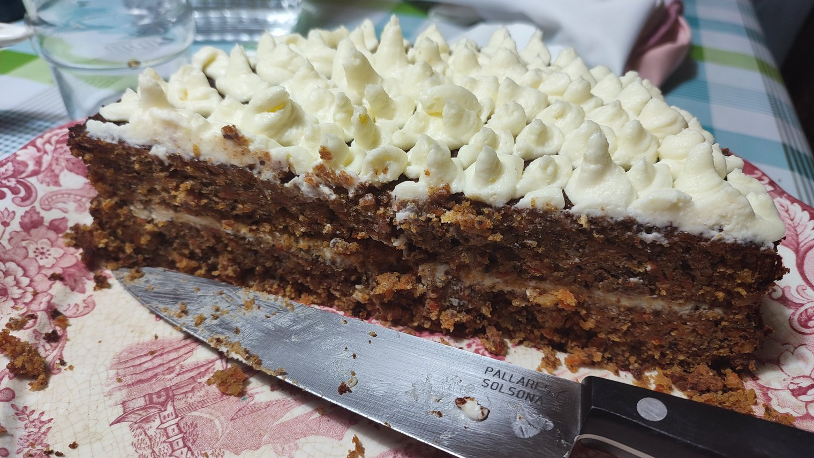

Carrot cake
Ingredientes
- 300 g de harina
- 1 sobre de levadura química
- 250 g de azúcar en polvo
- 200 g de azúcar moreno
- 1 sobre de azúcar vainillado
- 2 cdtas de canela
- 2 cdtas de jengibre
- 0.5 cdta de nuez moscada
- 0.5 cdta de especias variadas (mix)
- 0.12 cdta de clavo
- 1 cda de piel de naranja
- 1 cda de piel de limón
- 100 g de nueces
- 300 ml de aceite de girasol
- 4 -5 zanahorias (500g)
- 4 huevos
- 1 cdta de extracto de vainilla
- 100 g de mantequilla
- 200 g de queso Philadelphia

Preparación
Paso 1
Juntar los ingredientes secos: 300 g de harina, 1 sobre de levadura química, 150 g de azúcar en polvo, 200 g de azúcar moreno, 1 sobre de azúcar vainillado, las especias (2 cdtas de canela, 2 cdtas de jengibre, 0.5 cdta de nuez moscada, 0.5 cdta de especias variadas (mix), 0.12 cdta de clavo), las pieles de fruta (1 cda de piel de naranja y 1 cda de piel de limón) y 100 g de nueces.
Paso 2
Poner 300 ml de aceite de girasol.
Paso 3
Rallar gordo 4 -5 zanahorias (500g) e incorporarlas.
Paso 4
Juntar y añadir 4 huevos uno por uno. Poner 1 cdta de extracto de vainilla.
Paso 5
Remover todo bien, ponerlo en un molde y hornear a 180ºC durante 1h.
Consejos
Frosting: 100 g de mantequilla, 100 g de azúcar en polvo y 200 g de queso Philadelphia.
Si quiero rellenarlo por dentro, el pastel debería hacer el doble.
Resumen
